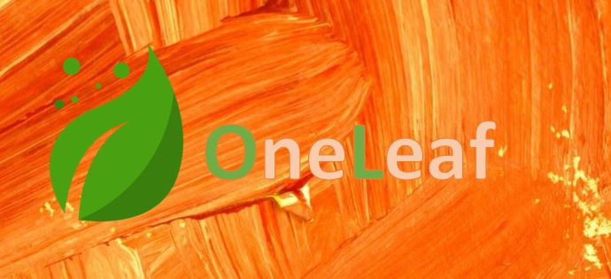
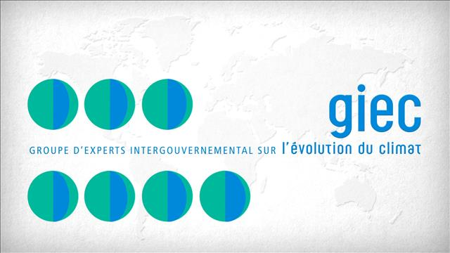
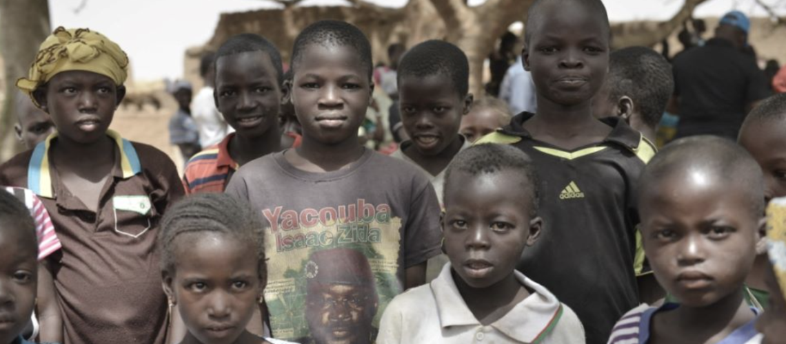

Qui sommes-nous ?
OneLeaf
Fondé en 2018, OneLeaf est une platfeforme de dons a titre associatif, qui a pour vocation d'aider des projets déja existants sur des thématiques clés des enjeux de ce siécle :
- Environnement
- Malnutrition
- Aide médical

Nos missions
Les projets
Vous trouverez ici l'avancement des projets financés grâce aux Dons sur ce premier trimestre.
Projet Mimo le Panda

Trésor national en Chine, le panda a une signification toute particulière pour le WWF. Depuis sa fondation en 1961, il en est le symbole. En tibétain, son nom signifie « chat-ours ». En effet, bien qu’appartenant à la famille des ursidés, ses pupilles sont fendues verticalement, comme celles des félins.
Participations :
Projet sensibilisation au rapport du GIEC

Trésor national en Chine, le panda a une signification toute particulière pour le WWF. Depuis sa fondation en 1961, il en est le symbole. En tibétain, son nom signifie « chat-ours ». En effet, bien qu’appartenant à la famille des ursidés, ses pupilles sont fendues verticalement, comme celles des félins.
Participations :
Projet Burkina Faso

Trésor national en Chine, le panda a une signification toute particulière pour le WWF. Depuis sa fondation en 1961, il en est le symbole. En tibétain, son nom signifie « chat-ours ». En effet, bien qu’appartenant à la famille des ursidés, ses pupilles sont fendues verticalement, comme celles des félins.
Participations :
Recrutement de benevoles!
Se sentir utile et faire quelque chose pour autrui est le moteur de ces bénévoles qui s’impliquent dans des domaines d’activité aussi divers que le sport, la culture ou les loisirs, l’humanitaire, la santé ou l’action sociale, la défense des droits ou encore l’éducation. On peut définir les bénévoles d’association comme des personnes qui consacrent une partie de leur temps, sans être rémunérées, aux activités de l’association.